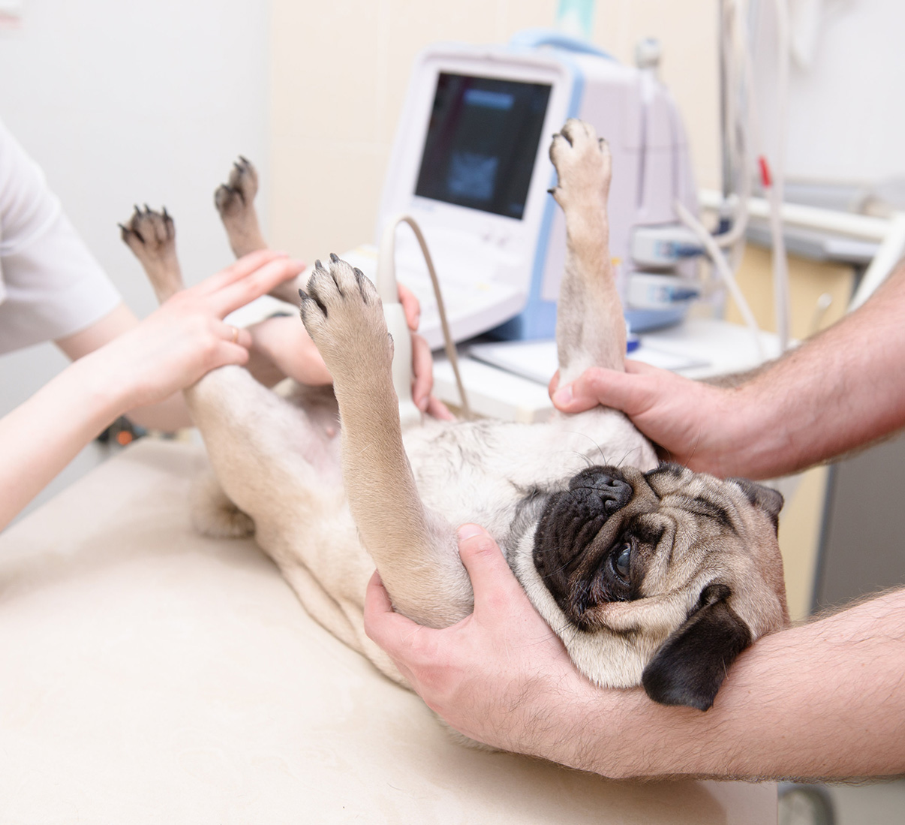
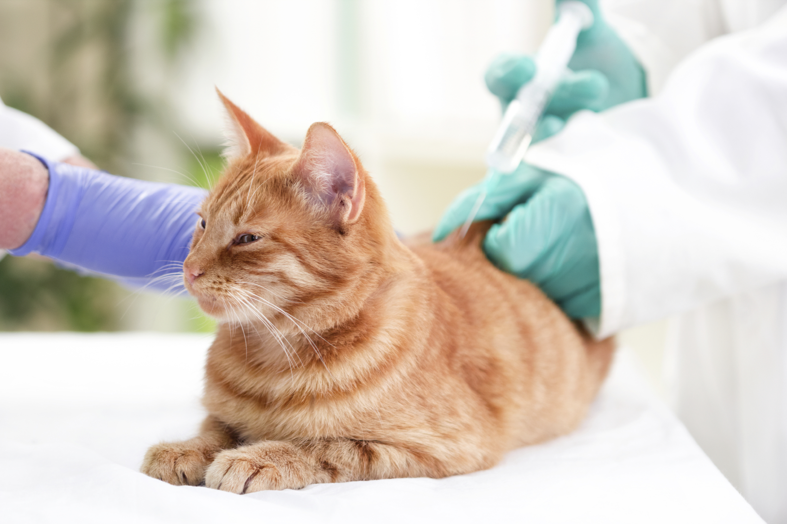

Watching your pet struggle with a lingering illness or injury can leave you feeling helpless. There's another path. Holistic and integrative therapies speed healing and ease chronic conditions — often without the harmful side effects of conventional drugs alone.
Comprehensive natural care, in the comfort of home
Pet Health Alternatives offers acupuncture, ozone and prolozone therapy, homeopathy, lab diagnostics, nutritional and raw-diet therapy, microbiome restorative therapy, LED light therapy, and humane in-home euthanasia. It is the only certified ozone therapy provider in the Clearwater, Florida area.
Core therapies
Eight ways we help your pet heal
Each therapy works with your pet's body — gently and safely — and can be combined with conventional medicine whenever that's the best path to healing.
Acupuncture & Aquapuncture
Practiced for over 2,000 years, acupuncture uses thin, nearly painless needles to relieve pain and restore balance. It eases GI problems, asthma, allergies, and musculoskeletal pain — with minimal side effects, alongside conventional care. We also offer aquapuncture (with Vitamin B12), LED-point therapy for needle-sensitive pets, and electroacupuncture for severe neck, back, and disc pain.
Why reach for antibiotics when oxygen can treat bacterial disease? Ozone therapy boosts oxygen delivery and microcirculation, reduces inflammation, and helps fight cancer, leptospirosis, Lyme disease, and more.
Pet Health Alternatives is the only certified ozone therapy provider in the area.
Homeopathy strengthens your pet's natural defenses instead of suppressing symptoms. Built on the principle that "like cures like," tiny, highly diluted remedies stimulate the body to heal itself.
Complete routine testing plus rabies titers, bionutritional analysis (BNA), and Vitamin D testing. We recommend geriatric panels for dogs over 9 and cats over 10. Correcting a Vitamin D deficiency strengthens the immune system and supports graceful aging.
Good nutrition is the foundation of wellness. Every plan is built around your pet's age, health, and your budget — including herbal and glandular support (like liver or pancreatic tissue therapy) when needed.
A non-surgical injection of healing nutrients and ozone directly into a damaged joint. Less painful than surgery, with most pets improving in just 3–4 treatments. Used safely in Europe for over 30 years — ideal for knee injuries like torn cruciate or meniscus.
Good nutrition means good health. We guide safe raw feeding — with the right calcium-to-phosphorus balance — plus supplement consultations to support digestion and overall vitality.
When the time comes, we help your pet pass peacefully at home — without a stressful clinic trip. We guide and support your family with compassion through every step of hospice and end-of-life care.
Beyond our core therapies, we offer a range of supporting treatments — and when your pet needs conventional procedures, we partner with respected local hospitals to make sure nothing falls through the cracks.
✓Microbiome Restorative Therapy (MBRT)
✓LED Light Therapy
✓House Calls
✓Nutritional Supplement Consultations
✓Referrals for surgery, dentistry & hospitalization
✓X-rays & ultrasound through partner hospitals
Imaging and advanced procedures are provided through Day and Evening Pet Hospital (Palm Harbor) and the Animal Hospital of Dunedin — so your pet always has access to the right care.


The house-call difference
We come to you
Every service we offer is delivered in the comfort of your own home. No carriers, no waiting rooms, no anxious car rides — just calm, focused care where your pet feels safest.
In-home visits mean far less stress for your animal, and they're ideal for cats and for senior or large dogs who find travel difficult. You stay by your pet's side through every step.
Quick answers to what pet owners ask us most about holistic care.
Is ozone therapy safe for pets?
Yes. Ozone therapy has been used in veterinary care to reduce inflammation and fight infection; Pet Health Alternatives is the only certified provider in the area.
Does acupuncture hurt my pet?
No. Thin, nearly painless needles are used, and needle-sensitive pets can be treated with LED-point therapy instead.
Do you offer in-home visits?
Yes. Pet Health Alternatives is a house-call practice, ideal for cats and senior or large dogs.
There's a better, healthier way
Tired of prescription medicine? There's a better, healthier way to restore your pet's vitality — and we come to you.